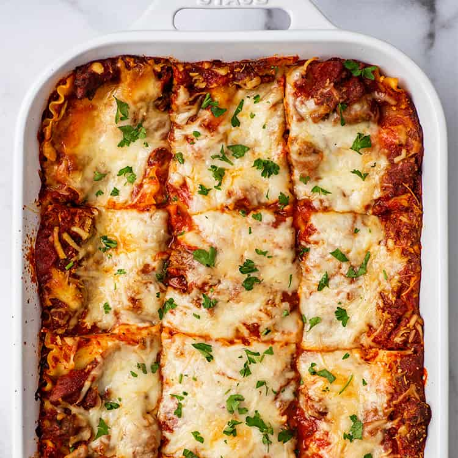

World's most tasty Lasagna is few steps away

Description
This recipe was my family's go-to lasagna recipe growing up, and it's just about the easiest lasagna you'll ever make.
If you're craving a plate of meaty, cheesy pasta comfort food, this lasagna absolutely delivers. It's totally foolproof and easy.
There's no cutting needed, and you can get almost all the ingredients pre-made, pre-shredded, and ready to go.
It's a crowd-pleaser. Everyone loves a perfect cheesy slice of lasagna.
It makes a ton. This dish is perfect for potlucks and parties (when those are safe to have again) and fantastic for freezing.
Lasagna is one of the few pasta dishes that freeze really well, so if you're a small household,
you can stock your freezer with a ton of food fast.
Ingredients list
- 1 (16 ounce) package lasagna noodles
- 1 pound lean ground beef
- salt and pepper to taste
- 1 (16 ounce) jar spaghetti sauce
- 1 clove garlic, minced
- ½ pound shredded mozzarella cheese
- ½ pound shredded Cheddar cheese
- 1 pint ricotta cheese
Steps
- Bring a large pot of lightly salted water to a boil. Add pasta and cook for 8 to 10 minutes or until al dente; drain.
- Preheat oven to 350 degrees F (175 degrees C). In a large skillet over medium-high heat, brown beef and season with salt and pepper; drain.
Stir in spaghetti sauce and garlic and simmer 5 minutes.
- In a medium bowl, combine mozzarella, Cheddar and ricotta; stir well. In 9x13 inch pan, alternate layers of noodles,
meat mixture and cheese mixture until pan is filled.
- Bake in preheated oven for 30 minutes, or until cheese is melted and bubbly.